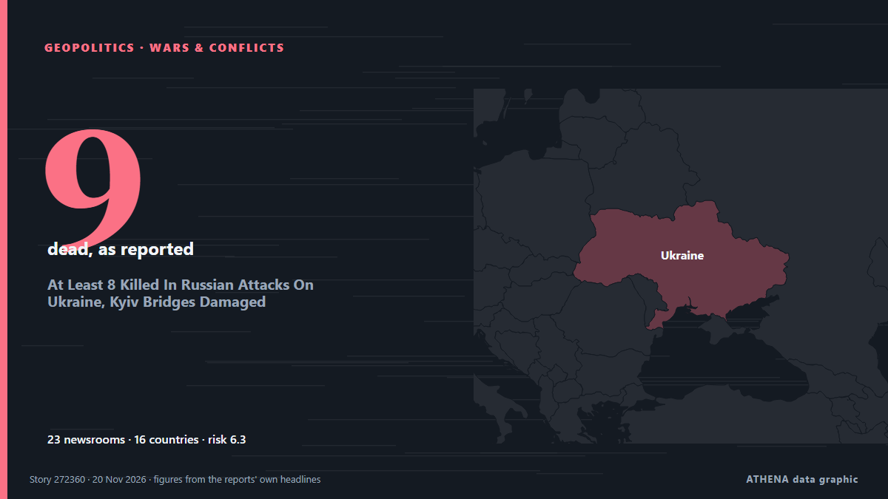

ATHENA Glaux Intelligence — Παγκόσμια ειδησεογραφική ανάλυση — κάθε αριθμός εξηγημένος
Κάθε είδηση, ελεγμένη σε πολλές χώρες.
Το ATHENA Glaux παρακολουθεί 635 ειδησεογραφικά μέσα σε όλο τον κόσμο. Μια είδηση γίνεται επαληθευμένο γεγονός μόνο όταν την αναφέρουν ανεξάρτητα μέσα. Κάθε γεγονός δείχνει ποιος το ανέφερε πρώτος και έναν βαθμό κινδύνου με τους λόγους του.
Αναφορές έρχονται από ανεξάρτητα μέσα — όταν δύο συναντηθούν στην ίδια ιστορία, γίνεται επιβεβαιωμένο γεγονός.
Πώς ελέγχει το ATHENA μια είδηση
- ΣυλλογήΟι αναφορές φτάνουν από ανεξάρτητα μέσα σε πολλές χώρες.
- ΑντιστοίχισηΌταν δύο μέσα συναντιούνται στην ίδια είδηση, γίνεται επαληθευμένο γεγονός.
- ΕξήγησηΚάθε γεγονός δείχνει ποιος ήταν πρώτος, πόσο εξαπλώθηκε και γιατί ο κίνδυνος είναι αυτός.

ΓεωπολιτικήAt Least 8 Killed In Russian Attacks On Ukraine, Kyiv Bridges Damaged
Russia launched a combined drone and ballistic missile attack on Kyiv and other Ukrainian regions overnight, killing at least eight people and injuring dozens more, according to officials. από RFE/RL (English)
Οι τίτλοι των ειδήσεων παρουσιάζονται στα αγγλικά, όπως δημοσιεύτηκαν.
US-Israeli war on Iran 'leave lasting marks' on global energy market, says IEA chief
Trump’s historic summit with Xi, Putin
President Trump held a historic trilateral summit with the leaders of China and Russia. από NBC News (World)

Πλοία στα θαλάσσια περάσματα τώρα
Ζωντανές μετρήσεις AIS. Πατήστε ή περάστε πάνω από μια μπάρα για λεπτομέρειες.
US approved Nvidia, AMD chip sales to China, reviving security concerns
The weakness came amid a wider sell-off in regional equity markets, with Japan’s Nikkei 225 down 2% and South Korea’s Kospi losing 2.6%. από Cointelegraph
Estonia to close border with Russia for at least six months
The decision is a response to Russia’s ongoing hostile actions against Estonia. από The Straits Times
Musk feels ‘pretty foolish’ over spending on Republicans
NEW YORK: Elon Musk said on Wednesday he felt “pretty foolish” about the amount of money he spent on this year’s US midterm elections after Republicans suffered sweeping losses. από Dawn
Γεωπολιτική, Πολιτική & Ασφάλεια
Περισσότερα ›Russia Rejects NATO-Style Security Guarantees for Ukraine
Russia has rejected proposals for NATO-style security guarantees for Ukraine, calling any arrangements resembling the country’s membership in the alliance unacceptable. από Kyiv Post
- Διπλωματία & σύνοδοι
Xi, Trump and Putin Agree to Increase Refined Oil Supply in Joint Declaration
- Εκλογές & πολιτική
Netanyahu associates acknowledge role in setting off election day arrests
- Διπλωματία & σύνοδοι
Europe warns against Ukraine peace deal made over its head
- Διπλωματία & σύνοδοι
US, China can help end Ukraine war, Trump tells Xi before trilateral with Putin
Οικονομία, Χρηματοοικονομικά & Αγορές
Περισσότερα ›Stocks slide as Anthropic IPO fails to calm AI fears
Investor confidence in AI has been shaken by worries about the technology's profitability and the massive debt needed to fund and build related infrastructure. από Free Malaysia Today
- Μετοχές & κινήσεις αγορών
Thursday was coldest night of autumn so far with temperatures set to dip further
- Μετοχές, ομόλογα & αγορές
Anthropic's stock market debut: How can Indians buy Anthropic shares
- Προβλέψεις & κίνδυνος ύφεσης
Full text: APEC Connectivity Blueprint
- Κρυπτονομίσματα & ψηφιακά στοιχεία
‘The Altruists’ Review: Netflix’s Slight Sam Bankman-Fried Series Tells a Strange, Crooked Love Story
Εμπόριο, Βιομηχανία & Υποδομές
Περισσότερα ›Gulf Sees Iran Oil Movement as US Widens Blockade
A cargo of Iranian crude was transferred between two tankers in the Persian Gulf this week, as the US warned its forces could target vessels that carry out the practice while enforcing a maritime… από Rigzone
- Κατασκευές & υποδομές
UK and EU launch reset with food and youth mobility deals
- Κατασκευές & υποδομές
Greek PM signals construction restrictions on Mykonos & Santorini
- Αερομεταφορές, σιδηρόδρομος & οδικές
President of Azerbaijan Ilham Aliyev meets with Chairman of National Assembly of Vietnam in Hanoi
- Κρίσιμες υποδομές
‘Doomsday prepping’ spikes in US as tech outages drive shopper paranoia
Ενέργεια, Πόροι & Περιβάλλον
Περισσότερα ›COP31 draft drops fossil fuel language, retains carbon capture as 1.5°C limit comes under threat
A revised draft agreement at COP31 has removed references to fossil fuels, including an earlier proposal for countries to accelerate the transition away from coal, oil and gas, drawing criticism over… από MyJoyOnline
- Κλίμα & κλιματική πολιτική
Cop31 heading towards overtime thanks to bitter dispute over fossil fuels
- Κλίμα & κλιματική πολιτική
Africa demands delivery on climate finance as COP31 closes
- Κλίμα & κλιματική πολιτική
Climate Minister Musadik Malik arrives in India for SCO dialogue
- Πετρέλαιο & φυσικό αέριο
Oruç Reis: Pakistan holds $8-10 trillion in natural resources, says Dar
Τεχνολογία, ΤΝ & Κυβερνοασφάλεια
Περισσότερα ›Thousands of UK fridges and freezers protected from hackers in secret operation
Food and drink industry in UK has been in ‘race against time’ operation to protect itself from cyber attacks. από Evening Standard (London)
- Τεχνητή νοημοσύνη
What Anthropic’s record $81 billion IPO means for Gulf investors
- Τεχνητή νοημοσύνη
Anthropic’s blockbuster debut tests Wall Street’s faith in AI boom
- Κυβερνοασφάλεια
Trump ousts cyber director after tech outages spark criticism
- Επεξεργαστές & υπολογιστική
US approved nearly 900,000 Nvidia and AMD AI chips for China. Raises more questions than answers.
Επιχειρήσεις, Εταιρείες & Επενδύσεις
Περισσότερα ›Δυστυχήματα & έκτακτες ανάγκες
Περισσότερα ›Child casualties from war in Ukraine reach highest level in almost four years – UNICEF
UNICEF has reported that 114 children were killed and 1,030 injured in Ukraine between January and October 2026 – the highest child casualty figures in almost four years. από Ukrainska Pravda (English)
- Δυστυχήματα & έκτακτες ανάγκες
England will need fire and pride to beat New Zealand – Steve Borthwick
- Δυστυχήματα & έκτακτες ανάγκες
Death toll from Russian attack on Kyiv rises to seven, 17 injured
- Δυστυχήματα & έκτακτες ανάγκες
Malaysia's Commonwealth Games gold medallist weightlifter loses arm in motorbike crash
- Δυστυχήματα & έκτακτες ανάγκες
Two pilgrims killed, 27 injured after tourist bus rams into truck in Kanpur
Τρεις τρόποι να διαβάσετε σήμερα
Ξεκινήστε από αυτόν που ταιριάζει στον χρόνο σαςΕπαληθευμένα γεγονότα
Κατά σειρά έκτασης της κάλυψης
- 'We Gotta Bring Jensen Huang Back': Uber Co-Founder Backs Former Nvidia CEO144 μέσα · 47 χώρεςΚίνδυνος 4.4
- Iran Steps Up Hormuz Tanker Attacks as Oil Prices Slide106 μέσα · 39 χώρεςΚίνδυνος 4.3
- Κίνδυνος 6.3
- Anthropic tops SpaceX with record $2 trillion Nasdaq debut30 μέσα · 21 χώρεςΚίνδυνος 2.9
- Riyadh’s tallest skyscraper hit in Houthi strike33 μέσα · 20 χώρεςΚίνδυνος 6.2
Γραφείο Ανάλυσης
Κάντε μια ερώτηση και διαβάστε τεκμηριωμένη αξιολόγηση μιας βασικής είδησης, μαζί με το τι θα την διέψευδε.
Ανοίξτε το Γραφείο Ανάλυσης ›Η σημερινή εικόνα
| 17:00 | 515 |
|---|---|
| 18:00 | 690 |
| 19:00 | 393 |
| 20:00 | 826 |
| 21:00 | 647 |
| 22:00 | 521 |
| 23:00 | 545 |
| 00:00 | 475 |
| 01:00 | 383 |
| 02:00 | 466 |
| 03:00 | 574 |
| 04:00 | 411 |
| 05:00 | 576 |
| 06:00 | 414 |
| 07:00 | 433 |
| 08:00 | 659 |
| 09:00 | 693 |
| 10:00 | 540 |
| 11:00 | 496 |
| 12:00 | 645 |
| 13:00 | 402 |
| 14:00 | 642 |
| 15:00 | 724 |
| 16:00 | 631 |
Κίνδυνος των σημερινών γεγονότων
Αναδυόμενα σήματα
- Νέο όνομα στις ειδήσεις · Ενεργό τώραSean Cairncross
- Απότομη αύξηση · Ενεργό τώραCGIL
- Απότομη αύξηση · Ενεργό τώραUK and EU
- Απότομη αύξηση · Ενεργό τώραAlibaba
- Απότομη αύξηση · Ενεργό τώραSCO
Μείνετε ενημερωμένοι
ATHENA Weekly Risk Picture
Οι μεγαλύτεροι γεωπολιτικοί, οικονομικοί και ναυτιλιακοί κίνδυνοι της εβδομάδας, διασταυρωμένοι και βαθμολογημένοι.
Κάθε Παρασκευή στις 08:00 ώρα Ελλάδας · δωρεάν · στα αγγλικά
Δωρεάν εγγραφήΤο ATHENA στο Telegram
Οι ειδήσεις τη στιγμή που δημοσιεύονται: έκτακτα γεγονότα με κίνδυνο 6 ή περισσότερο, ωριαία σύνοψη, ενημερώσεις κινδύνου και η ημερήσια ενημέρωση στις 10:00.
Δωρεάν · αναρτήσεις στα αγγλικά · αποχωρείτε όποτε θέλετε
Είσοδος στο κανάλιΤην εγγραφή τη διαχειρίζεται η beehiiv με διπλή επιβεβαίωση: τίποτα από όσα πληκτρολογείτε δεν αποστέλλεται στο ATHENA, και κάθε τεύχος έχει σύνδεσμο διαγραφής.
Παρακολούθηση κινδύνων
Περισσότερα ›Παγκόσμιοι κίνδυνοι — εβδομάδα 47, 2026 (16–22 Νοε) ›